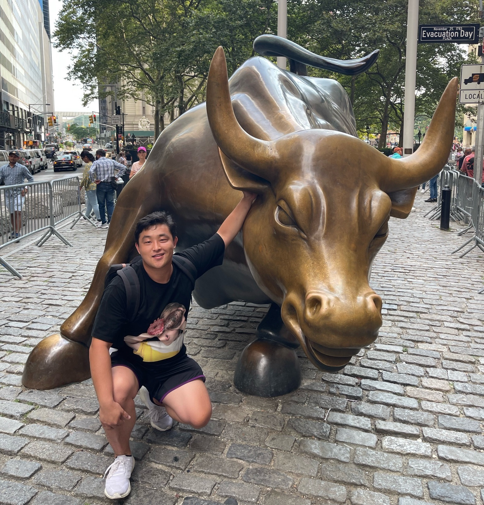

王子源 Ziyuan Wang
|  | PhD Candidate, |
About me
I am currently a PhD Candidate 🎓in SUFE AI Lab, supervised by Professor Hailiang Huang. My main research interests include Deep Learning, Machine Learning, Natural Language Processing and Quantitative Investment, focus on using AI to solve practical problems. Before SUFE, I received the B.S. degree in Statistics from Hunan University in 2018.
Research🔬
My research interests include:
Deep Learning
Natural Language Processing
Text Classification
Semantic Textual Similarity
Quantitative Investment
Design Science
Publications📃
Wang, Z., Huang, H., & Han, S. "IDEA: Interactive DoublE Attentions from Label Embedding for Text Classification". 2022 IEEE 34rd International Conference on Tools with Artificial Intelligence (ICTAI, CCF-C). IEEE, 2022.
Guo, B.*, Zhang, X.*, Wang, Z.*, Jiang, M.*, Nie, J.*, Ding, Y., Yue, J., & Wu, Y. "How Close is ChatGPT to Human Experts? Comparison Corpus, Evaluation, and Detection". ArXiv, abs/2301.07597.(Submitted to KDD'23, CCF-A)
Note: * indicates equal contribution.
Projects💻
How Close is ChatGPT to Human Experts? Comparison Corpus, Evaluation, and Detection 2022.12-2023.02
The earliest to open source comparison datasets and detector models in academia and industry
The detector demo has exceeded 20,000 global visits, covering 5 continents, and the open source model has an average monthly download volume of over 3,000, while the dataset has an average monthly download volume of over 1,000, the Github stars over
, and has been cited by international peers eight times within one month.
Submitted to KDD'23(CCF-A)
Visiting Our Demo: ChatGPT detectors 🔥
Investigating the Effectiveness of Whitening Post-processing Methods on Modifying LLMs Representations, 2022.10-2023.02
By means of exploring different whitening methods for vector matrices, we normalized the vectorized representation of the BERT model and reduced its correlation, and evaluated its performance on various NLP tasks.
Submitted to SIGIR'23(CCF-A)
New Hybrid Model of Utility Analysis and Performance Prediction in Crowdfunding: A Perspective of Behavior-related Decision, 2022.7-2023.02
Introducing the prospect theory (PT) to capture the heterogeneity of investor support behavior in crowdfunding, evaluates the prospect utility of the project, and makes support decisions based on the evaluated prospect utility.
Submitted to Decision Support Systems(SCI I)
Web Tool: SUFE-CS-CONF-DDL, 2022.01-2022.03
Based on Vue-Cli, we built a countdown system tool for the computer conference of Shanghai University of Finance and Economics, which provides dual retrieval of tenure track Tier/CCF level.
Visiting the website: SUFE Tenure Track CS Conference Deadlines 🔍
Analysis of Shanghai's biopharmaceutical industry chain based on big data and comparative study of the Yangtze River Delta, 2021.08-2022.01
Combining big data intelligent industrial research technology with traditional industrial economics, we constructed a knowledge graph of the biopharmaceutical industry chain and conducted an analysis of the biopharmaceutical industry chain in the Yangtze River Delta.
In May 2021, the leaders of the Shanghai Municipal Party Committee visited an economic regulatory platform in a certain district and fully recognized the achievements of the platform construction, pointing out that further efforts should be made to build a "city brain"🧠upgraded version in Shanghai.
Policy and business classification in technology public opinion recommendation systems, 2020.08-2021.01
We crawled and cleaned policy texts released by the government, and conducted multi-label classification based on the business types of Ping An Technology's business group, with traditional and SOTA ML/DL text classification methods.
Partial code: Long-Text-Bert-Multi-label-Text-Classification-Pytorch


Working experience🧱
Academic Reviewers
Applied Intelligence
International Journal of Computer Sciences and Engineering
ACM International Conference on Information and Knowledge Management
Teaching Assistant, SUFE AI Lab
Advanced Machine Learning(Fall 2019)
Application of Big Data in Economics (Fall 2021)
Research Assistant, School of Information Management & Engeineering
Fall 2020, Spring 2021, and Spring 2022 semesters.
Education📔
Visiting Scholar, Business Analytics, Tippie College of Business, University of Iowa🦅, 2022.04-2023.04
Advised by Professor Weiguo Patrick Fan.
Supported by China Scholarship Council(CSC) in Visiting PhD Students Program.
PhD Candidate, Management Science and Engineering, School of Information Management & Engeineering, Shanghai University of Finance and Economics, 2018.09-2023.12
GPA: 3.6/4.0, Ranking: top10%
Main Courses: Machine Learning, Financial Engineering, Advanced Econometrics, Advanced Statistics, Advanced Operations Research, Optimization Theory, Stochastic Models.
Supervised by Professor Hailiang Huang and Songqiao Han
B.E., Statistics, College of Finance and Statistics, Hunan University, 2014.09-2018.06
GPA: 3.8/4.5, Ranking: top5%
Main Courses: Statistics, Multivariate Statistical Analysis, Sampling Techniques, Econometrics, Mathematical Statistics, Finance, Fundamentals of Programming, Statistical Software Applications.
Selected Competitions and Awards🏅
National Scholarship, Ministry of Education of the People's Republic of China, 2017.11
First-class Scholarship for Graduates, Shanghai University of Finance and Economics, 2022.12
Second-class Scholarship for Graduates, Shanghai University of Finance and Economics, 2018.10&2019.10&2020.10&2021.10
First-class Scholarship for Undergraduates, Hunan University, 2016.12
Citibank Future Elite Scholarship, Citibank(China), 2016.12
Outstanding Graduates of Hunan Province, Education Department of Hunan Province, 2018.06
School of Merit student, Shanghai University of Finance and Economics, 2019.12
School of Merit student, Hunan University, 2017.12
School of Excellent Class Leader, Hunan University, 2015.12
National First prize at the Agriculture Development Bank Cup Essay Competition, 2016.10
National Second prize at the 7th National College Student Market Survey and Analysis Competition, 2017.05
H Prize in the National Mathematical Contest in Modeling, 2016.03
Last Update: March, 2023.